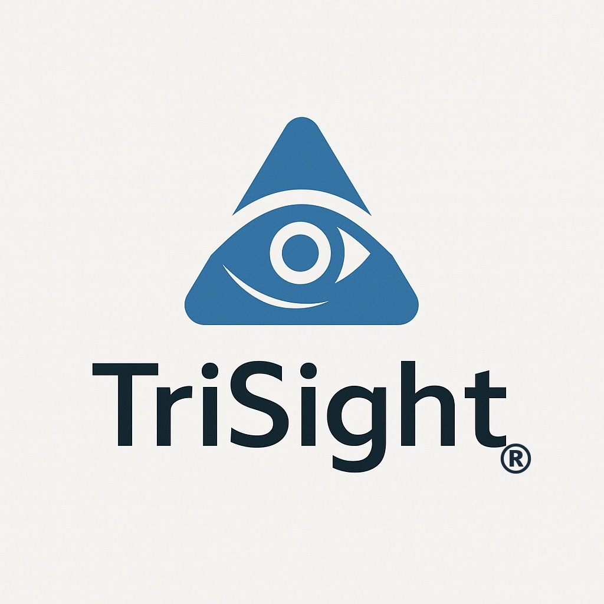

TriSight™
三身一体型知的統合支援システム ／ 合同会社トライサイト
スタンバイ待機中 — 起案者による起動をお待ちしています
TriSight 起動
あ
あずさ
理論化・構造支援
初期受付担当
待機中
な
なぎさ
リスク検証・
安全設計
待機中
つ
つかさ
実世界適用性
評価担当
待機中
— AI スタッフ 出席確認 —
あ
あずさ
起案・構想 AI
———
な
なぎさ
検証・分析 AI
———
つ
つかさ
評価・判定 AI
———
AIスタッフ — 全員起動完了
本日のテーマをどうぞ。
音声入力 / テキスト入力
起動後に音声入力またはテキスト入力が可能になります
送信先：
あずさ（理論化）
なぎさ（検証）
つかさ（評価）
起案を送信 →
クリア
セッションログ
Claude X（記録官）はセッション終了後、起案者の手動起動によってのみ書庫を更新します